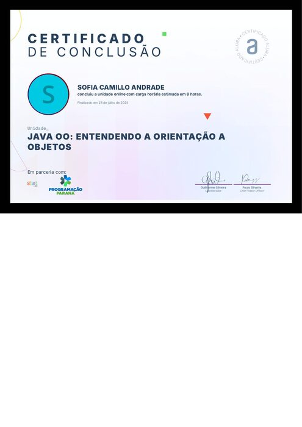
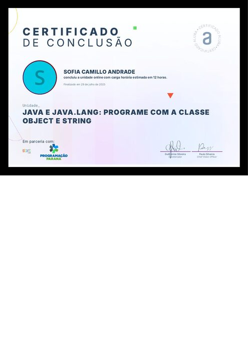
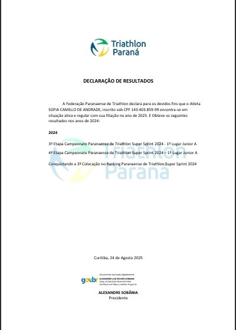
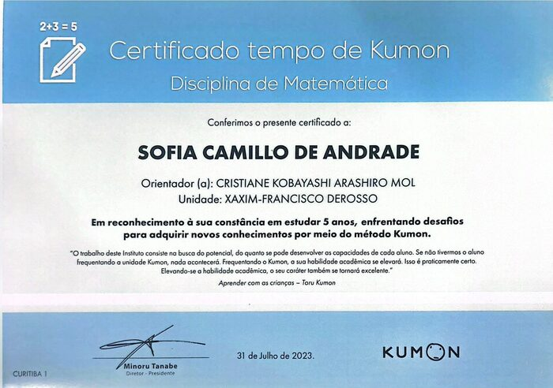

Raízes Solidárias
Site de apoio a refugiados no Brasil, com seus serviços e formulários de contato e voluntariado.
- HTML
- CSS
Sou estudante de Engenharia de Software na PUCPR e gosto de entender como as coisas funcionam por dentro — de um algoritmo simples até a estrutura de um site completo. Estou sempre estudando alguma linguagem ou ferramenta nova e gosto de aplicar isso em projetos práticos.
Fora das telas, sou ex-atleta de alto rendimento em triathlon. Nas horas livres, gosto de jogar Valorant, e nos momentos mais tranquilos prefiro desacelerar cuidando da fazenda em Stardew Valley.
Site de apoio a refugiados no Brasil, com seus serviços e formulários de contato e voluntariado.
Projeto em Python que demonstra o uso de tuplas: criação, indexação e desempacotamento.
Jogo de adivinhação em Python onde o jogador tenta acertar o número secreto em um número limitado de tentativas.

Alura / Programação Paraná
2025
Ver certificado
Alura / Programação Paraná
2025
Ver certificado
Federação Paranaense de Triathlon
2025
Ver certificado
Kumon (Unidade Xaxim-Francisco Derosso)
2023
Ver certificado